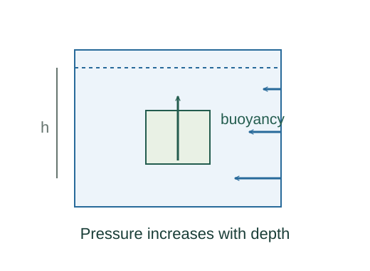

Derive pressure with depth and buoyancy
Pressure increases downward because lower layers support the weight above them. The resulting pressure difference across an immersed object produces buoyancy.
What the symbols mean
ρ: fluid density; h: depth below a reference surface; p₀: surface pressure; Fb: upward buoyant-force magnitude.
When this applies
Fluid at rest, uniform density and gravitational field. The simple buoyancy expression uses the displaced volume in that uniform fluid.

Isolate a thin horizontal slab
For slab area A and thickness dz, choose upward as positive. Pressure on the bottom pushes up, pressure on the top pushes down, and the slab has weight ρgA dz.
Take the differential limit
Divide by A dz and let thickness approach zero. The pressure gradient is negative upward.
Integrate to a depth h
For constant density, moving downward by h increases the pressure by ρgh.
Go deeper at this stepHow does a gradient accumulate over distance?Why an integral accumulates a rateReplace an object by the fluid it displaced
The surrounding pressure forces would support that volume of fluid if it were present at rest. Therefore their resultant on an object of the same boundary equals the weight of displaced fluid.
Where each equation comes from
Derived equations link to an argument below. Definitions, physical postulates and constitutive models are identified as the inputs of that argument.
Derivation of the main resultDerived result
Conditions: Fluid at rest, uniform density and gravitational field. The simple buoyancy expression uses the displaced volume in that uniform fluid.
- Isolate a thin horizontal slab. For slab area A and thickness dz, choose upward as positive. Pressure on the bottom pushes up, pressure on the top pushes down, and the slab has weight ρgA dz. Explain the equation used in step 1 ↗
- Take the differential limit. Divide by A dz and let thickness approach zero. The pressure gradient is negative upward. Explain the equation used in step 2 ↗
- Integrate to a depth h. For constant density, moving downward by h increases the pressure by ρgh. Explain the equation used in step 3 ↗ How does a gradient accumulate over distance? ↗
- Replace an object by the fluid it displaced. The surrounding pressure forces would support that volume of fluid if it were present at rest. Therefore their resultant on an object of the same boundary equals the weight of displaced fluid. Explain the equation used in step 4 ↗
Equation in step 1Derived result
What is being shown: Isolate a thin horizontal slab
For slab area A and thickness dz, choose upward as positive. Pressure on the bottom pushes up, pressure on the top pushes down, and the slab has weight ρgA dz.
Starting conditions and inputs: Fluid at rest, uniform density and gravitational field. The simple buoyancy expression uses the displaced volume in that uniform fluid.
Equation in step 2Derived result
What is being shown: Take the differential limit
Divide by A dz and let thickness approach zero. The pressure gradient is negative upward.
Earlier results used in this argument:
- p(z)A − p(z + dz)A − ρgA dz = 0 (Derived result)
Equation in step 3Derived result
What is being shown: Integrate to a depth h
For constant density, moving downward by h increases the pressure by ρgh.
Earlier results used in this argument:
- p(z)A − p(z + dz)A − ρgA dz = 0 (Derived result)
- dp/dz = −ρg (Derived result)
Equation in step 4Derived result
What is being shown: Replace an object by the fluid it displaced
The surrounding pressure forces would support that volume of fluid if it were present at rest. Therefore their resultant on an object of the same boundary equals the weight of displaced fluid.
Earlier results used in this argument:
- p(z)A − p(z + dz)A − ρgA dz = 0 (Derived result)
- dp/dz = −ρg (Derived result)
- pbelow − p₀ = ρgh (Derived result)
A worked example
At 2.0 m depth in water, gauge pressure is about 19.6 kPa. An immersed 0.003 m³ volume displaces water of weight about 29.4 N.
Derivation behind this calculation ↗A point to keep straight
Buoyant force depends on displaced fluid density, not object density. Absolute pressure includes p₀; gauge pressure subtracts it.
Check the assumptions and derivation ↗